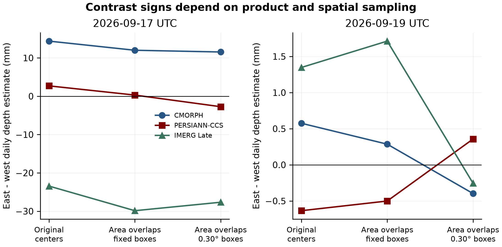
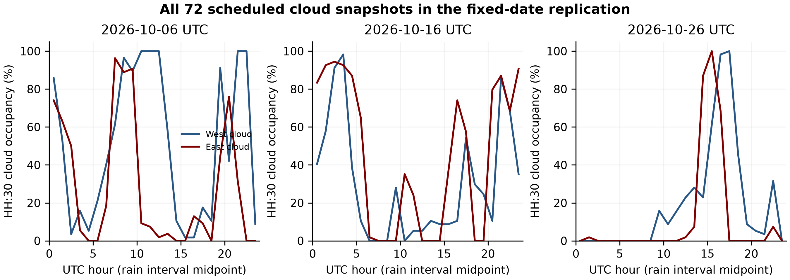
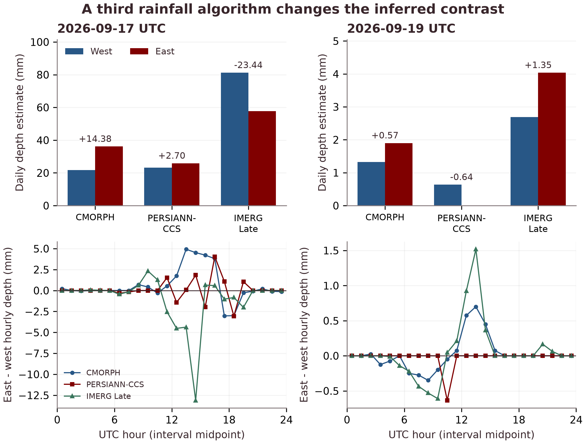

Received image
Loading archiveLoading the latest archived image…
—
Meteor LRPT · Philippines
Loading the latest archived image…
Calculating…
| Satellite | Date · PHT | Acquisition | Peak elevation | Loss of signal | Duration | Actions |
|---|
Horizon events use a 10° mask; the filter applies to maximum elevation. Passes are predictions, not scheduled recordings.
Received-scan timing is checked before any orbit segment is drawn.
Blue line: satellite subtrack for time-checked scans. Amber ring: approximate station region. No image footprint or geographic image overlay is asserted.
Select an observation.
Our study checks cloud interpretation, spatial sampling and October follow-ups across fixed areas in Nueva Ecija and Aurora.
Weighting rainfall cells by their overlap with the same study boxes removes three-product east-greater agreement from all four original wet-hour cases. October follow-ups retain null results and opposing estimates. Cloud occupancy alone cannot resolve these rainfall contrasts.
Six audited receptions on 4–6 November demonstrate our antenna-to-image pipeline. Missing bands remain visible. These November observations do not enlarge the September weather sample; image pixel registration remains unverified.
48 original September snapshots, all 72 fixed-date October snapshots, and three separately conditioned follow-ups. Provider geolocation supports these measurements; neither pixels nor hours count as independent storms.
All 96 original IMERG Late Run files are preserved and hash-checked. Offline replay verifies 144 box/hour records and 2,736 base/shift records. The base sampling uses one western and two eastern native cells, limiting fine-scale interpretation.
We now weight each native rainfall cell by its spherical overlap with the fixed study box. None of the four original September wet-hour contrasts is east-greater in all three area-weighted products. At 16:00 UTC on 17 September, IMERG changes from +0.585 mm with cell centers to −0.170 mm with area overlaps. Expanded 0.30° boxes provide a separate sensitivity check.
| Date (UTC) | Product | Difference |
|---|---|---|
| 2026-09-17 | CMORPH | +11.99 |
| 2026-09-17 | PERSIANN-CCS | +0.30 |
| 2026-09-17 | IMERG Late | -29.86 |
| 2026-09-19 | CMORPH | +0.29 |
| 2026-09-19 | PERSIANN-CCS | -0.50 |
| 2026-09-19 | IMERG Late | +1.71 |

Fixed October 6, 16 and 26 checks include all 72 cloud snapshots and 68 complete two-product rain-hour comparisons. All 37 easterly hours have rain data, but none meets the qualifying east-greater wet criterion. Four October 26 CMORPH source containers are empty and remain missing, never dry.

A separately declared October screen retains all 124 candidates at 00, 06, 12 and 18 UTC. Three wet/easterly hours qualify on October 11–12: two have opposing product signs. The concordant October 12 case has 98.2% western and 100% eastern cloud occupancy, so complete saturation is not universal. These adjacent-date cases do not establish independent-storm replication; IMERG was not retrieved for them.
Local projection checks have not established independent landmark accuracy. No suitable in-box gauge record was obtained from the audited public station sources. Local quantitative geography, ground validation, author/adviser review and organizer clarification remain open.
In the historical cell-center extension, IMERG reverses three of four originally concordant wet-hour contrasts. No daily east–west contrast sign is shared by all three algorithms on either date. IMERG estimates more western rainfall on 17 September, opposite to both original algorithms. Products have different spatial support and can share inputs; no one estimate is treated as ground truth.
| Date | Algorithm | West | East | East − west |
|---|---|---|---|---|
| 17 Sep | CMORPH | 21.75 | 36.12 | +14.38 |
| 17 Sep | PERSIANN-CCS | 23.15 | 25.84 | +2.70 |
| 17 Sep | IMERG Late | 81.23 | 57.79 | -23.44 |
| 19 Sep | CMORPH | 1.32 | 1.90 | +0.57 |
| 19 Sep | PERSIANN-CCS | 0.64 | 0.00 | -0.64 |
| 19 Sep | IMERG Late | 2.69 | 4.04 | +1.35 |
Swipe the table to see all columns.
CMORPH/PERSIANN placement robustness does not extend to all three algorithms. IMERG is Late Run, with V07C filenames and a 07B internal version field, not Final Run. The terrain-model control severely underestimates rainfall; terrain-caused enhancement is not established. These remain two weather dates.

Explore the original 48 study hours, or a local capture whose pixel geography is unresolved.
Try 17 September at 16:00 UTC: switch between cell centers and area overlaps. Every estimate remains visible; a method change can change agreement.
| Product | West | East | Difference |
|---|
An educational evidence procedure, not a validated forecast or warning service. Directional agreement is not ground truth. Expanded boxes have different geography; they are a declared sensitivity check.
No captures match. Try another satellite or date.
Original CADUs and processing logs remain intact. This portal copies selected evidence without changing the source archive. Raw IQ is retained separately on the Pi where documented.
Count complete 1024-byte records, distinct records, expected sync markers, and trailing bytes. SHA-256 hashes connect each download to its archived source.
Decoded products can contain missing lines. Colour composites are variants of the same observation. Geographic overlays are withheld pending scan-time validation.